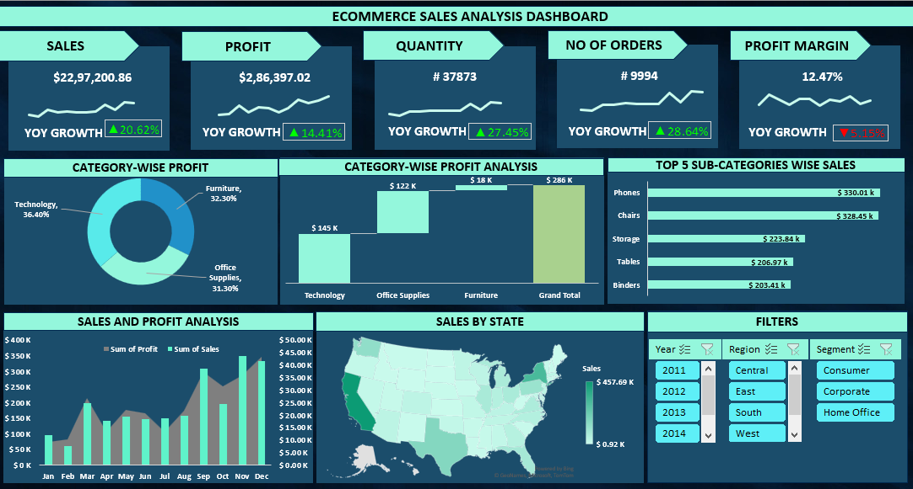
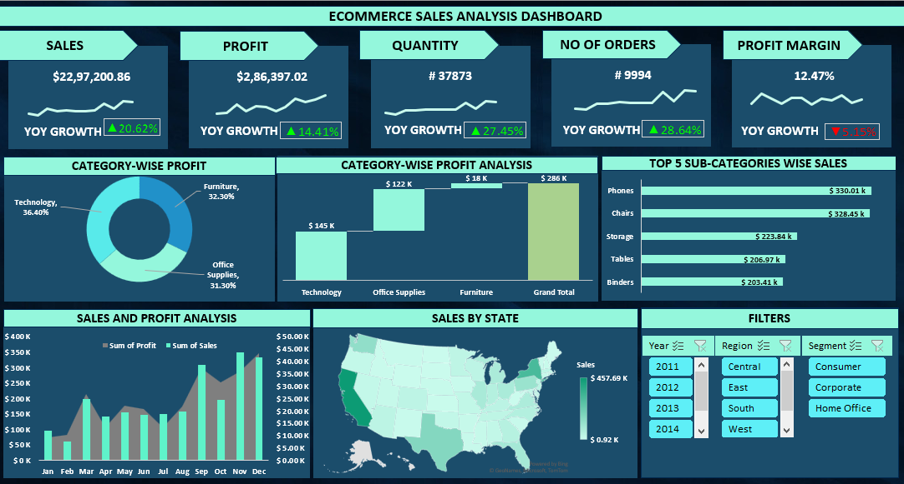
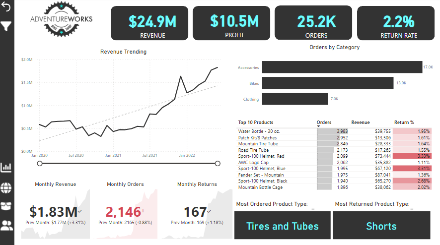
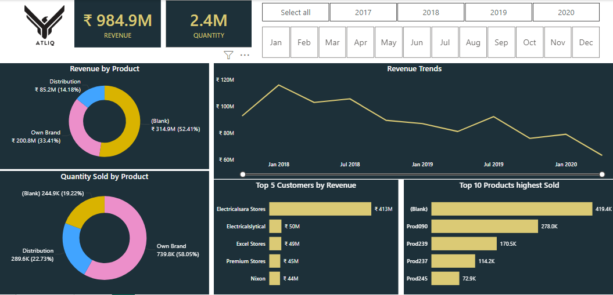

Analyze a Zomato dummy dataset using SQL to identify the most popular items,
evaluate customer membership benefits, track Zomato points accumulation,
and examine customer transactions for insights
into purchasing behavior and trends.
 

Develop an Excel e-commerce sales dashboard to analyze sales and profit by category, subcategory,
state, and month. Include filters for year, segment, and region to provide detailed insights and
facilitate data-driven decision-making.

Create a Power BI dashboard for AdventureWorks, a fictitious company,
to analyze sales, profit, and returns. Identify key performance indicators (KPIs),
and gain insights into product and customer details to support strategic decision-making
and business optimization.

This project involves developing a comprehensive dashboard for Atliq, a fictional hardware company,
to analyze revenue and quantity sold by product, and revenue trends over time.
The dashboard includes filters for year and month, key performance indicators for total revenue
and quantity sold, and a visual breakdown of revenue by state, filtered by region.

In this project, we analyzed a Netflix dataset using SQL to uncover insights such as the number
of TV shows and movies, average release years, and genre distributions.
We performed data extraction, filtering, and aggregation to identify trends and patterns,
providing a detailed overview of Netflix's content, including duration analysis and
country-specific averages for TV shows.